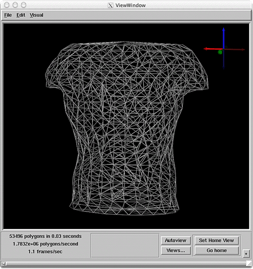

Chapter 3: Derived FieldsChapter Sections
Chapter OverviewChapters 1 and 2 demonstrated the construction of SCIRun networks to visualize the geometry and data values in a Field. Chapter 3 explores additional visualization techniques, and examines filter modules that receive a Field as input, then output a newly derived Field.Rather than building one net to introduce these modules, several nets are constructed. Each net describes a single visualization technique. This chapter is divided into three sections, one for each method.
FieldBoundaryFirst, create a net to show how to extract the boundary of a Field. The FieldBoundary module extracts a boundary surface from a volume. For example, given a TetVolMesh (volume), the module extracts the boundary faces, and outputs a TriSurfMesh (surface). Follow these steps to create a net using the FieldBoundary (SCIRun->FieldsCreate->FieldBoundary) module:
The net should look similar to Figure 3.1. Save this net as 3A.net, it will be used in Chapter 4 of this tutorial, Putting the nets together..
Figure 3.1, FieldBoundary Net (3A)

DirectMappingNext, interpolate data values from one Field to another Field. This section, demonstrates how to load two datasets. The first contains the utahtorso-lowres-voltage.tvd.fld examined in Chapter 1, which refered to as the volume Field. The second contains the electrode positions in utahtorso-lowres-electrodes.pcd.fld, from Chapter 2. Once the datasets are loaded, create a new Field by interpolating the electrode positions and voltage values. Interpolation is the means used to calculate the value at a certain point, by using the known values at surrounding points. For each electrode, the corresponding voltage value must be found from the volume Field. The DirectMapping module implements this algorithm. Follow these steps to create the DirectMapping net:
Figure 3.3: DirectMapping net
Figure 3.4: DirectMapping Visualization Save this net as 3B.net. It will be used in Chapter 4 of this tutorial, Putting the nets together.
StreamLinesStreamline advection is the last visualization technique explored in this chapter. The StreamLines module visualizes vector Fields by integrating curves through a gradient vector flow Field. The input vector Field is generated by using the Gradient module (SCIRun->FieldsData) to compute the gradient of the utahtorso-lowres-voltage.tvd.fld. Then, use the (SCIRun->FieldsCreate) SampleField module to generate a sample distribution of StreamLine seed points. SampleField generates samples from any type of input Field, and outputs the samples as a PointCloud Field. The following modules are needed to run the StreamLines net:
These modules should be hooked together as shown in Figure 3.5.
Figure 3.5: StreamLines net Once the modules are connected, set the following GUI parameters:
The SampleField module can generate samples randomly, or the user can select samples using a 3D widget. For Streamline visualization, use a 3D Rake widget for distributing seed points. The user can interactively position the rake of seed points within the volume. The StreamLines module works by advecting the seed points through the vector Field. The vector field is piecewise constant, so the "Cell Walk" algorithm is used to trace out the streamlines.
Figure 3.6: StreamLines UI Save this net as 3C.net. It will be used in Chapter 4 of this tutorial, Putting the nets together.
Controlling WidgetsThe rake is one of many widgets used in SCIRun. Widgets are graphical elements in the Viewer that allow the user to interactively control features of the display. The SCIRun widgets have similar visual characteristics, but manipulate different aspects of the display, as detailed in the User's Guide 6.5, Control Widgets. Practice manipulating the widgets (and thus the SCIRun Viewer's display) in the following manner:
Network Execution and Data DependenceThere are several ways to execute a SCIRun network that has not fired. In the StreamLines network:
When a module is instructed to execute, all modules in its net will also execute. Note: if a module has already computed a result, and its inputs have not changed, it will use the previously computed result.
Figure 3.7: Module Control Menu After executing the StreamLines network, an image like Figure 3.8 will appear in the ViewWindow. The rake widget will appear as a gray bar with spheres at the ends. The user's image may be slightly different than Figure 3.8, but the user should see the rake and colored streamlines. If the streamlines do not appear, the user may need to check the object list and turn on the Edges.
Figure 3.8: Streamlines Visualization
SummaryThree nets were constructed in chapter 3, each describing a single method of visualizing the utahtorso-lowres-voltage dataset.In chapter 4, the nets will be merged into a single, larger network that performs concurrent visualizations. |